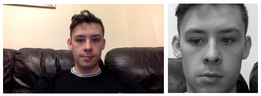
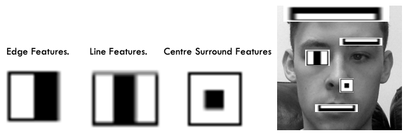

Final Year Project
For my Final Year project at Swansea University, I have decided to explore into Computer Vision and Artificial Intelligence. These two fields have been a great interest of mine for a while and this project was a great way for me to get stuck in and understand the field better.
This project is still ongoing and therefore I have not received a final mark yet.
The main aim for the project is to develop an accurate system for Facial Detection and Recognition. To do this I gave myself some achievable aims. Firstly I wanted to explore the OpenCV library, an open source Computer Vision and Machine Learning library, and find out how I could utilise this library to develop my own system. I then wanted to research other machine learning algorithms and compare these algorithms to determine which are the most optimal and efficient to use in the system.
Facial Recognition is quickly and vastly becoming deployed worldwide for its many uses, especially in crime prevention and security. Facial data is unique to each individual and therefore provides an excellent form of identification. Examples of where this type of system is being used today would be: In areas such as London and most of China, where it is being used to monitor civilians are discover any people who are of particular interest, such as known terrorists. Another example of where this type of system is being used is in tackling illegal chimpanzee trade. The system has learnt to recognise chimp faces and is being deployed in areas such as the Facebook market place to discover any illegal selling of chimpanzees.
This type of system doesn’t come without any troubles, there is a huge stigma around being constantly watched and monitored. Many people believe the use of the system in cities is intrusive and a breach of privacy. The counter argument to this is
Here is a brief overview of the system. It starts with an input image, that contains a face. The image is assigned a label and an ID. This image is then preprocessed. The purpose of preprocessing is to remove any redundant information in the image. Images are large and contain a lot of stuff which isn’t needed by the system. The system doesn’t need to know what is in the background of the image, neither does it need to know the colour of the image. Therefore when preprocessing the image is converted to grayscale and is cropped to only contain the face. Here is an image showing the difference that preprocessing makes. 
The original image is on the left with the preprocessed image being on the right. (They are slightly different as a second passed before I could take the second screenshot).
Once the image has been preprocessed the system starts to extract features. It uses the principles explained by Paul Viola & Michael Jones in their 2001 paper Rapid Object Detection using a Boosted Cascade of Simple Features, which can be found here. The idea is to take Haar-feature classifiers and cascade them to extract vital facial information such as an eye or a nose or a mouth etc. a Haar-feature is a feature the image goes from a high dark intensity to a high light intensity, signifying that there is an edge there. This idea can be used to determine edges, lines or areas called “Centre Surround Features” in the image. Here is an image showing each of these features and how they could be used to extract features in a face. 
The system doesn’t work exactly in this way, it uses a cascade of these classifiers. This idea is to have a binary decision tree where each node is a classifier. The system checks a classifier and if it returns true it moves to the next classifier, if false it decides the image must not be of a face. Should the decision tree output true for every classifier, then the system is satisfied that a face has been detected.
Once the system has extracted features and each face is represented as a numPy array, the system can begin to train. There are many Supervised Learning algorithms that can be used to train the system therefore my project will be aiming to discover which is the best to use for this type of system. To discover which would be the ‘best’ algorithm to use I have developed a testing environment. The testing environment will be three dataset sizes, small, medium and large. Each algorithm will get the same datasets. I will monitor three results in my tests. A) How confident the system is that the current recognised person is actually that person. B)How many times the algorithm is correct in recognising a person and C)The runtime of the algorithm. I will take the runtime into account as while, for example an algorithm, A may be a little more accurate than another algorithm, B, A could take a lot longer to run than B making B more of an efficient choice to use and deploy.
This is currently where I am with the system. I have developed a system than can detect faces and extracts features. I am now developing the testing environment and the learning algorithms. The algorithms I am using are: Local Binary Pattern Histograms, EigenFace, FisherFace along with a Support Vector Machine and a Neural Network.